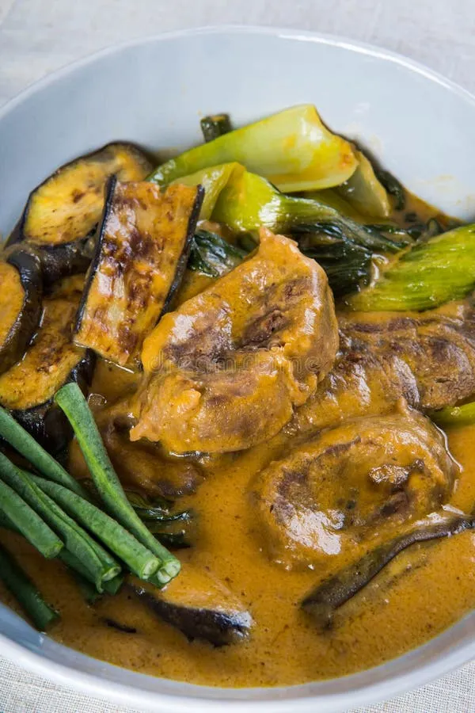
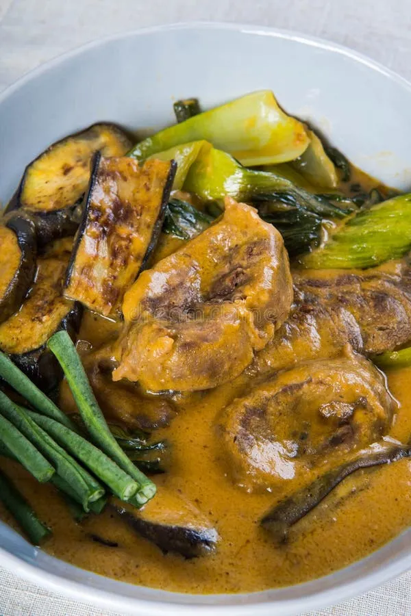
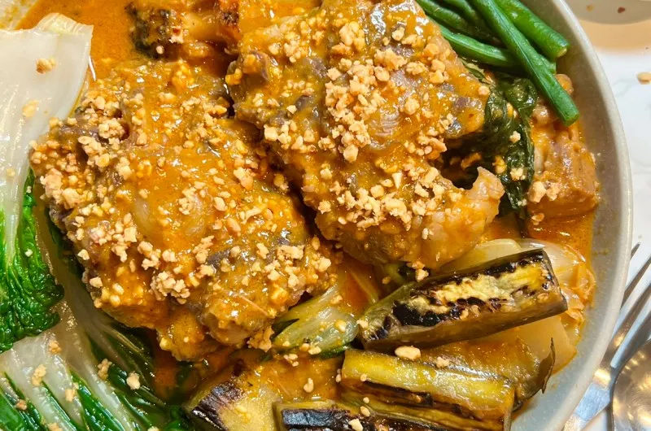
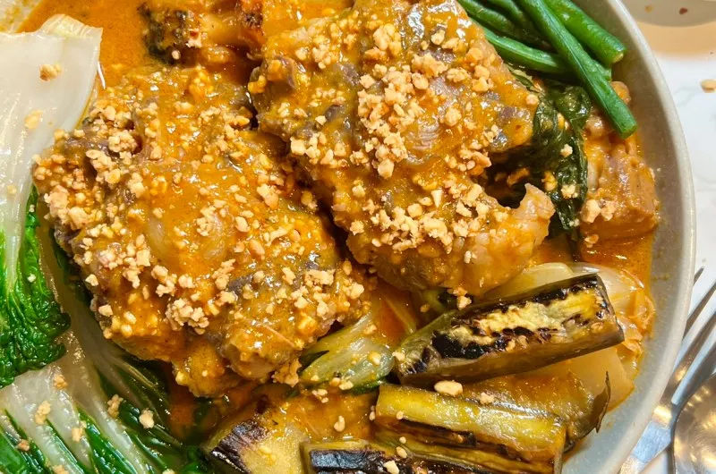

Kare-Kare
A rich peanut-based Filipino stew traditionally served with bagoong (shrimp paste).
 

 

Ingredients
- 1 kg oxtail or beef shank, cut into chunks
- 1 cup peanut butter (smooth)
- 1/2 cup ground roasted peanuts (optional)
- 1 banana blossom (optional), sliced
- 1 bunch bok choy or kangkong
- 2 tbsp annatto oil (achuete) for color
- Salt and pepper to taste
- Bagoong (shrimp paste) to serve
Procedure
- Boil the meat until tender (1.5–2 hours) with a little salt; reserve broth.
- In a separate bowl, mix peanut butter with some hot broth to loosen.
- Add peanut mixture to the pot and simmer, stirring until sauce thickens.
- Add vegetables (banana blossom, bok choy) and simmer until cooked.
- Finish with annatto oil for color and serve with bagoong on the side.